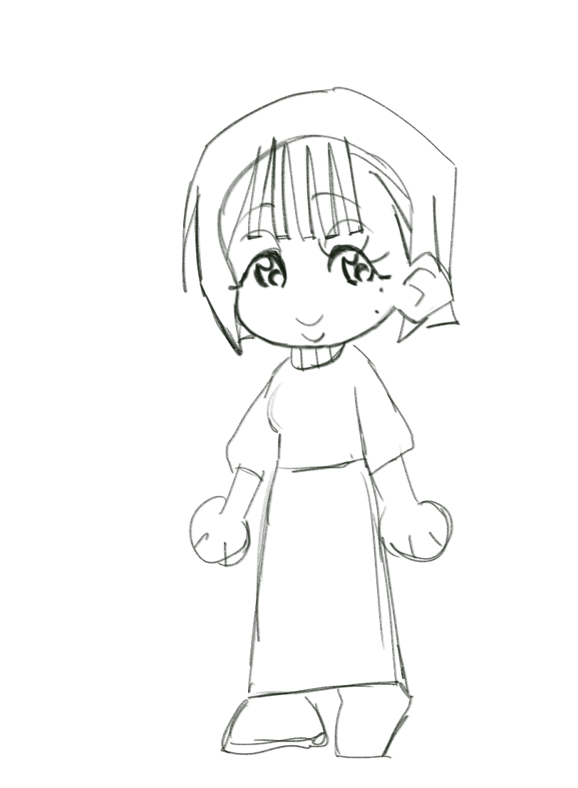
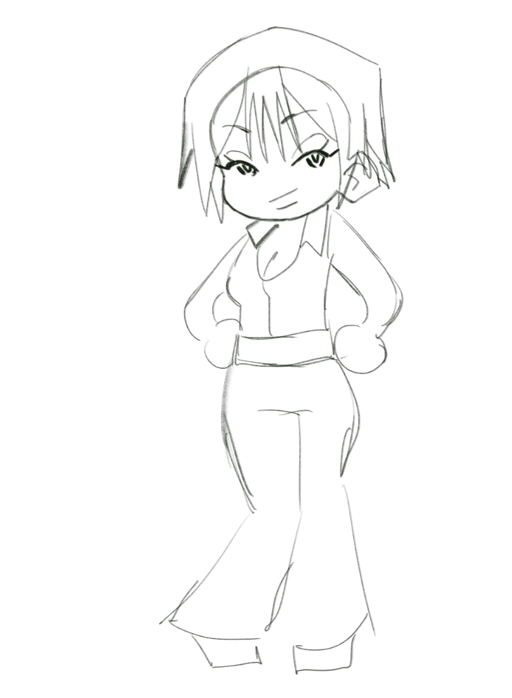

Naomi Lucas
A very shy and modest woman who has a knack for the arts.
She's known Nia Yamamoto since childhood and has been best friends with her ever since.

Nia Yamamoto
An outgoing, brazen woman who knows everything about spiders and fashion.
Has been best friends with Naomi Lucas since childhood.